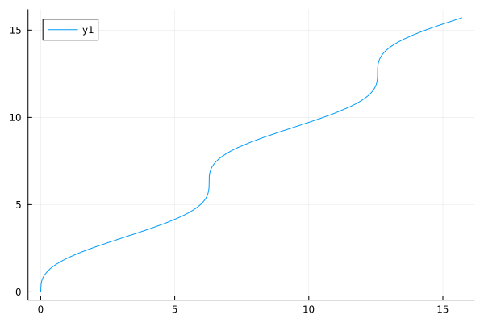
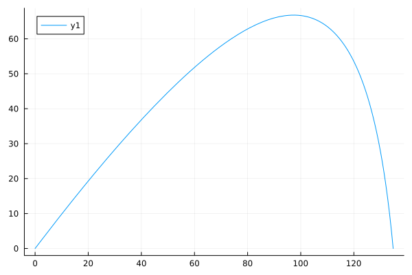
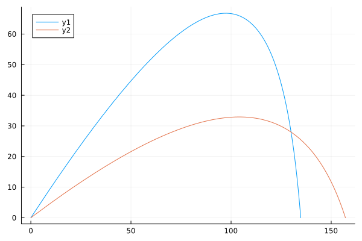
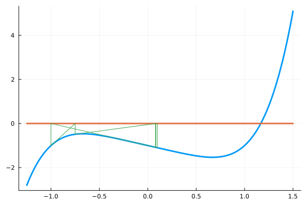

An overview of Roots
The Roots package contains simple routines for finding zeros of continuous scalar functions of a single real variable. A zero of $f$ is a value $c$ where $f(c) = 0$. The basic interface is through the function find_zero, which through multiple dispatch can handle many different cases.
The NonlinearSolve package provides an alternative.
In the following, we will use ForwardDiff to take derivatives.
julia> using Roots, ForwardDiffBasic usage
Consider the polynomial function $f(x) = x^5 - x + 1/2$. As a polynomial, its roots, or zeros, could be identified with the roots function of the Polynomials package. However, even that function uses a numeric method to identify the values, as no solution with radicals is available. That is, even for polynomials, non-linear root finders are needed to solve $f(x)=0$. (Though polynomial root-finders can exploit certain properties not available for general non-linear functions.)
The Roots package provides a variety of algorithms for this task. In this quick overview, only the default ones are emphasized.
For the function $f(x) = x^5 - x + 1/2$ a simple plot over $[-2,2]$will show a zero somewhere between $-1.5$ and $-0.5$ and two zeros near $0.6$. ("Between", as the continuous function has different signs at $-1.5$ and $-0.5$.)
For the zero between two values at which the function changes sign, a bracketing method is useful, as bracketing methods are guaranteed to converge for continuous functions by the intermediate value theorem. A bracketing algorithm will be used when the initial data is passed as a tuple:
julia> using Rootsjulia> f(x) = x^5 - x + 1/2f (generic function with 1 method)julia> find_zero(f, (-3/2, -1/2)) ≈ -1.0983313019186336trueThe default algorithm is guaranteed to have an answer nearly as accurate as is possible given the limitations of floating point computations.
For the zeros near a point, a non-bracketing method is often used, as generally the algorithms are more efficient and can be used in cases where a zero does not cross the $x$ axis. Passing just an initial guess will dispatch to such a method:
julia> find_zero(f, 0.6) ≈ 0.550606579334135trueThis finds the answer to the left of the starting point. To get the other nearby zero, a starting point closer to that answer can be used.
However, an initial graph might convince one that any of the up-to-$5$ real roots will occur between $-2$ and $2$. The find_zeros function uses heuristics and a few of the algorithms to attempt to identify all zeros between the specified range. Here the method successfully identifies all $3$:
julia> find_zeros(f, -2, 2)
3-element Vector{Float64}:
-1.0983313019186334
0.5506065793341349
0.7690997031778959This shows the two main entry points of Roots: find_zero to locate a zero between or near values using one of many methods and find_zeros to heuristically identify all zeros within some interval.
Bracketing methods
For a function $f$ (univariate, real-valued) a bracket is a pair $ a < b $ for which $f(a) \cdot f(b) < 0$. That is the function values have different signs at $a$ and $b$. If $f$ is a continuous function this ensures (Bolzano) there will be a zero in the interval $[a,b]$. If $f$ is not continuous, then there must be at least one value $c$ in $[a,b]$ where the function "jumps" over $0$.
Such a value can be found, up to floating point round off. That is, given f(a) * f(b) < 0, a value c with a < c < b can be found where either f(c) == 0.0 or f(prevfloat(c)) * f(c) < 0 or f(c) * f(nextfloat(c)) < 0.
To illustrate, consider the function $f(x) = \cos(x) - x$. From trigonometry we can see readily that $[0,\pi/2]$ is a bracket.
The Roots package includes the bisection algorithm through find_zero. We use a structure for which extrema returns (a,b) with a < b, such as a vector or tuple, to specify the initial condition and Bisection() to specify the algorithm:
julia> f(x) = cos(x) - x;julia> c = find_zero(f, (0, pi/2), Bisection())0.7390851332151607julia> c, f(c)(0.7390851332151607, 0.0)For this function we see that f(c) is 0.0.
Functions may be parameterized. The following uses a similar function as above, still having $(0, \pi/2)$ as a bracket when $p>0$. By passing in values of p to find_zero, different, related problems may be solved.
julia> g(x, p=1) = cos(x) - x/p;julia> x0, M = (0, pi/2), Bisection()((0, 1.5707963267948966), Bisection())julia> find_zero(g, x0, M) # as before, solve cos(x) - x = 0 using default p=10.7390851332151607julia> find_zero(g, x0, M; p=2) # solves cos(x) - x/2 = 01.0298665293222589julia> find_zero(g, x0, M, 2) # positional argument; useful with broadcasting1.0298665293222589Next consider $f(x) = \sin(x)$. A known zero is $\pi$. Trigonometry tells us that $[\pi/2, 3\pi/2]$ will be a bracket. The calling pattern for find_zero is find_zero(f, x0, M; kwargs...), where kwargs can specify details about parameters for the problem or tolerances for the solver. In this call Bisection() is not specified, as it will be the default (as the initial value is not specified as a number and is over Float64 values):
julia> f(x) = sin(x);julia> c = find_zero(f, (pi/2, 3pi/2))3.141592653589793julia> c, f(c)(3.141592653589793, 1.2246467991473532e-16)This value of c does not exactly produce a zero, however, it is as close as can be:
julia> f(prevfloat(c)) * f(c) < 0.0 || f(c) * f(nextfloat(c)) < 0.0trueThat is, at c the function is changing sign.
From a mathematical perspective, a zero is guaranteed for a continuous function. However, the computer algorithm doesn't assume continuity, it just looks for changes of sign. As such, the algorithm will identify discontinuities, not just zeros. For example:
julia> find_zero(x -> 1/x, (-1, 1))0.0The endpoints and function values can even be infinite for the default Bisection algorithm over the standard floating point types:
julia> find_zero(x -> Inf*sign(x), (-Inf, Inf)) # Float64 only0.0The basic algorithm used for bracketing when the values are simple floating point values is a modification of the bisection method, where the midpoint is taken over the bit representation of a and b.
For big float values, bisection is the default (with non-zero tolerances), but its use is definitely not suggested. Simple bisection over BigFloat values can take many more iterations. For the problem of finding a zero of sin in the interval (big(3), big(4)), the default bisection takes $252$ iterations, whereas the A42 method takes $4$.
The algorithms of Alefeld, Potra, and Shi; the Roots.ModAB algorithm; the well-known algorithm of Brent; and others, also start with a bracketing algorithm. For many problems these will take far fewer steps than the bisection algorithm to reach convergence. These may be called directly. For example,
julia> find_zero(sin, (3,4), A42())3.141592653589793By default, bisection will converge to machine tolerance. This may provide more accuracy than desired. A tolerance may be specified to terminate early, thereby utilizing fewer resources. For example, the following uses $4$ steps to reach accuracy to $1/16$ (without specifying xatol it uses $53$ steps):
julia> rt = find_zero(sin, (3.0, 4.0); xatol=1/16)3.125julia> rt - pi-0.016592653589793116Non-bracketing methods
Bracketing methods have guaranteed convergence, but in general may require many more function calls than are otherwise needed to produce an answer and not all zeros of a function may be bracketed. If a good initial guess is known, then the find_zero function provides an interface to some different iterative algorithms that are more efficient. Unlike bracketing methods, these algorithms may not converge to the desired root if the initial guess is not well chosen.
The default algorithm is modeled after an algorithm used for HP-34 calculators. This algorithm is designed to be more forgiving of the quality of the initial guess at the cost of possibly performing more steps than other algorithms, as if the algorithm encounters a bracket, a bracketing method will be used (an efficient one, though).
For example, the answer to our initial problem is visibly seen from a graph to be near 1. Given this, the zero is found through:
julia> f(x) = cos(x) - x;julia> c = find_zero(f, 1)0.7390851332151607julia> c, f(c)(0.7390851332151607, 0.0)For the polynomial $f(x) = x^3 - 2x - 5$, an initial guess of $2$ seems reasonable:
julia> f(x) = x^3 - 2x - 5;julia> c = find_zero(f, 2)2.0945514815423265julia> f(c), sign(f(prevfloat(c)) * f(c)), sign(f(c) * f(nextfloat(c)))(-8.881784197001252e-16, 1.0, -1.0)For even more precision, BigFloat numbers can be used
julia> c = find_zero(sin, big(3))3.141592653589793238462643383279502884197169399375105820974944592307816406286198julia> c, sin(c), c - pi(3.141592653589793238462643383279502884197169399375105820974944592307816406286198, 1.096917440979352076742130626395698021050758236508687951179005716992142688513354e-77, 0.0)Higher-order methods
The default call to find_zero uses a first order method and then possibly bracketing, which potentially involves more function calls than necessary. There may be times where a more efficient algorithm is sought. For such, a higher-order method might be better suited. There are algorithms Order1 (secant method), Order2 (Steffensen), Order5, Order8, and Order16. The order $1$ or $2$ methods are generally quite efficient in terms of steps needed over floating point values. The even-higher-order ones are potentially useful when more precision is used. These algorithms are accessed by specifying the method after the initial starting point:
julia> f(x) = 2x - exp(-x);julia> c = find_zero(f, 1, Order1())0.3517337112491958julia> c, f(c)(0.3517337112491958, -1.1102230246251565e-16)Similarly,
julia> f(x) = (x + 3) * (x - 1)^2;julia> c = find_zero(f, -2, Order2())-3.0julia> c, f(c)(-3.0, 0.0)julia> c = find_zero(f, 2, Order8())1.0000000131073141julia> c, f(c)(1.0000000131073141, 6.87206736323862e-16)Starting at $2$ the algorithm converges towards $1$, showing that zeros need not be simple zeros to be found. A simple zero, $c,$ has $f(x) = (x-c) \cdot g(x)$ where $g(c) \neq 0$. Generally speaking, non-simple zeros are expected to take many more function calls, as the methods are no longer super-linear. This is the case here, where Order2 uses $51$ function calls, Order8 uses $42$, and Order0 takes $80$. The Roots.Order2B method is useful when a multiplicity is expected; on this problem it takes $17$ function calls.
For some functions, adjusting the default tolerances may be necessary to achieve convergence. The tolerances include atol and rtol, which are used to check if $f(x_n) \approx 0$; xatol and xrtol, to check if $x_n \approx x_{n-1}$; and maxiters to limit the number of iterations in the algorithm.
To investigate an algorithm and its convergence a Roots.Tracks object can be used to store the intermediate values.
Classical methods
The package provides some classical methods for root finding, such as Roots.Newton, Roots.Halley, and Roots.Schroder. (Currently these are not exported, so must be prefixed with the package name to be used.) We can see how each works on a problem studied by Newton. Newton's method uses the function and its derivative:
julia> f(x) = x^3 - 2x - 5;julia> fp(x) = 3x^2 - 2;julia> c = Roots.find_zero((f, fp), 2, Roots.Newton())2.0945514815423265julia> c, f(c)(2.0945514815423265, -8.881784197001252e-16)The functions are specified using a tuple, or through a function returning (f(x), f(x)/f'(x)). The latter is convenient when f' is easily computed when f is, but otherwise may be expensive to compute.
Halley's method has cubic convergence, as compared to Newton's quadratic convergence. It uses the second derivative as well:
julia> fpp(x) = 6x;julia> c = Roots.find_zero((f, fp, fpp), 2, Roots.Halley())2.0945514815423265julia> c, f(c), sign(f(prevfloat(c)) * f(nextfloat(c)))(2.0945514815423265, -8.881784197001252e-16, -1.0)(Halley's method takes 3 steps, Newton's 4, but Newton's uses 5 function calls to Halley's 10.)
For many functions, their derivatives can be computed automatically. The ForwardDiff package provides a means. Here we define an operator D to compute a derivative:
julia> function D(f, n::Int=1) n <= 0 && return f n == 1 && return x -> ForwardDiff.derivative(f,float(x)) D(D(f,1),n-1) endD (generic function with 2 methods)julia> dfᵏs(f,k) = ntuple(i->D(f,i-1), Val(k+1)) # (f, f′, f′′, …)dfᵏs (generic function with 1 method)julia> find_zero((f,D(f)), 2, Roots.Newton())2.0945514815423265Or, for Halley's method:
julia> find_zero((f, D(f), D(f,2)), 2, Roots.Halley())2.0945514815423265The family of solvers implemented in Roots.LithBoonkkampIJzerman(S,D) where S is the number of prior points used to generate the next, and D is the number of derivatives used, has both the secant method (S=2, D=0) and Newton's method (S=1, D=1) as members, but also provides others. By adding more memory or adding more derivatives the convergence rate increases, at the expense of more complicated expressions or more function calls per step.
julia> find_zero(dfᵏs(f, 0), 2, Roots.LithBoonkkampIJzerman(3,0)) # like secant
2.0945514815423265
julia> find_zero(dfᵏs(f, 1), 2, Roots.LithBoonkkampIJzerman(2,1)) # like Newton
2.0945514815423265
julia> find_zero(dfᵏs(f, 2), 2, Roots.LithBoonkkampIJzerman(2,2)) # like Halley
2.0945514815423265The problem-algorithm-solve interface
The problem-algorithm-solve interface is a pattern popularized in Julia by the DifferentialEquations.jl suite of packages. The pattern consists of setting up a problem then solving the problem by specifying an algorithm. This is very similar to what is specified in the find_zero(f, x0, M) interface where f and x0 specify the problem, M the algorithm, and find_zero calls the solver.
To break this up into steps, Roots has the type ZeroProblem and methods for init, solve, and solve! from the CommonSolve.jl package.
Consider solving $\sin(x) = 0$ using the Secant method starting with the interval $[3,4]$.
julia> f(x) = sin(x);julia> x0 = (3, 4)(3, 4)julia> M = Secant()Secant()julia> Z = ZeroProblem(f, x0)ZeroProblem{typeof(f), Tuple{Int64, Int64}}(f, (3, 4))julia> solve(Z, M)3.141592653589793Changing the method is easy:
julia> solve(Z, Order2())3.1415926535897944The solve interface works with parameterized functions, as well:
julia> g(x, p=1) = cos(x) - x/p;julia> Z = ZeroProblem(g, (0.0, pi/2))ZeroProblem{typeof(g), Tuple{Float64, Float64}}(g, (0.0, 1.5707963267948966))julia> solve(Z, Secant(), 2) # uses p=2 as a positional argument1.0298665293222589julia> solve(Z, Bisection(); p=3, xatol=1/16) # p=3; uses keywords for position and tolerances1.1959535058744393Positional arguments are useful for broadcasting over several parameter values.
Examples
Intersections
A discourse post involved finding the roots of $\tan(x) = x /(B(\Lambda x^2 - 1)$. As the right hand side decays, we can see that for each positive arm of the periodic tangent function, there will be one intersection point in $(k\pi, (k+1/2)\pi)$ for each $k=0,1,\dots$. The standard way to find when $f(x) = g(x)$ with this package is to define an auxiliary function $h(x) = f(x) - g(x)$, as below:
julia> k, B, Λ = 3, 1, 1;julia> f(x) = tan(x); g(x) = x/(B*(Λ*x^2 - 1));julia> h(x) = f(x) - g(x)h (generic function with 1 method)julia> c = find_zero(h, (k*pi, (k + 1/2)*pi)); c, h(c)(9.530477156207574, 8.326672684688674e-16)As of version 1.9 of Julia, an extension is provided so that when SymPy is loaded, an equation of a single symbolic variable can be used to specify the left and right hand sides, as with:
using SymPy
@syms x
find_zero(tan(x) ~ x/(B*(Λ*x^2 - 1)), (k*pi, (k + 1/2)*pi))Inverse functions
The find_zero function can be used to identify inverse functions. Suppose $f$ is a monotonic function on $[a,b]$. Then an inverse function solves $y = f(x)$ for $x$ given a $y$. This will do that task and return values in a function form:
function inverse_function(f, a, b, args...; kwargs...) fa, fb = f(a), f(b) m, M = fa < fb ? (fa, fb) : (fb, fa) y -> begin @assert m ≤ y ≤ M find_zero(x ->f(x) - y, (a,b), args...; kwargs...) endendinverse_function (generic function with 1 method)The fact that $f$ is monotonic, ensures that a bracket of $[a,b]$ can be used supposing $y$ is between $f(a)$ and $f(b)$, so no guess is needed.
Here we numerically find the inverse function of $f(x) = x - \sin(x)$:
using Plots, Roots;f(x) = x - sin(x)a, b = 0, 5piplot(inverse_function(f, a, b), f(a), f(b))
Finding critical points
The D function, defined above, makes it straightforward to find critical points (typically where the derivative is $0$ but also where it is undefined). For example, the critical point of the function $f(x) = 1/x^2 + x^3, x > 0$ near $1.0$ is where the derivative is $0$ and can be found through:
julia> f(x) = 1/x^2 + x^3;julia> find_zero(D(f), 1)0.9221079114817278For more complicated expressions, D may need some technical adjustments to be employed. In this example, we have a function that models the flight of an arrow on a windy day:
julia> function flight(x, theta) k = 1/2 a = 200*cosd(theta) b = 32/k tand(theta)*x + (b/a)*x - b*log(a/(a-x)) endflight (generic function with 1 method)The total distance flown is when flight(x) == 0.0 for some x > 0: This can be solved for different theta with find_zero. In the following, we note that log(a/(a-x)) will have an asymptote at a, so we start our search at a-5:
julia> function howfar(theta) a = 200*cosd(theta) find_zero(x -> flight(x, theta), a-5) # starting point has type determined by `theta`. endhowfar (generic function with 1 method)To visualize the trajectory if shot at $45$ degrees, we would have:
using Plots;flight(x, theta) = (k = 1/2; a = 200*cosd(theta); b = 32/k; tand(theta)*x + (b/a)*x - b*log(a/(a-x)))howfar(theta) = (a = 200*cosd(theta); find_zero(x -> flight(x, theta), a-5))howfarp(t) = ForwardDiff.derivative(howfar,t)theta = 45tstar = find_zero(howfarp, 45)plot(x -> flight(x, theta), 0, howfar(theta))
To maximize the range we solve for the lone critical point of howfar within reasonable starting points.
As of version v"1.9" of Julia, the automatic differentiation provided by ForwardDiff will bypass working through a call to find_zero. Prior to this version, automatic differentiation will work if the initial point has the proper type (depending on an expression of theta in this case). As we use 200*cosd(theta)-5 for a starting point, this is satisfied.
julia> (tstar = find_zero(D(howfar), 45)) ≈ 26.2623089trueThis graph would show the differences in the trajectories:
plot(x -> flight(x, 45), 0, howfar(45))plot!(x -> flight(x, tstar), 0, howfar(tstar))
Sensitivity
In the last example, the question of how the distance varies with the angle is clearly important.
In general, for functions with parameters, $f(x,p)$, derivatives with respect to the $p$ variable(s) may be of interest.
A first attempt, as shown above, may be to try and auto-differentiate the output of find_zero. For example:
f(x, p) = x^2 - p # p a scalarp = 22F(p) = find_zero(f, one(p), Order1(), p)ForwardDiff.derivative(F, p)Dual{ForwardDiff.Tag{typeof(Main.F), Int64}}(0.3535533905932738,-0.0)Prior to version v"1.9" of Julia, there were issues with this approach, though in this case it finds the correct answer, as will be seen: a) it is not as performant as what we will discuss next, b) the subtle use of one(p) for the starting point is needed to ensure the type for the $x$ values is correct, and c) not all algorithms will work, in particular Bisection is not amenable to this approach.
F(p) = find_zero(f, (zero(p), one(p)), Roots.Bisection(), p)ForwardDiff.derivative(F, 1/2)Dual{ForwardDiff.Tag{typeof(Main.F), Float64}}(0.7071067811865476,-0.0)This will be 0.0 if the differentiation is propagated through the algorithm. With v"1.9" of Julia or later, the derivative is calculated correctly through the method described below.
Using the implicit function theorem and following these notes, this paper on the adjoint method, or the methods more generally applied in the ImplicitDifferentiation package we can auto-differentiate without pushing that machinery through find_zero.
The solution, $x^*(p)$, provided by find_zero depends on the parameter(s), $p$. Notationally,
\[f(x^*(p), p) = 0\]
The implicit function theorem has conditions guaranteeing the existence and differentiability of $x^*(p)$. Assuming these hold, taking the gradient (derivative) in $p$ of both sides, gives by the chain rule:
\[\frac{\partial}{\partial_x}f(x^*(p),p) \frac{\partial}{\partial_p}x^*(p) + \frac{\partial}{\partial_p}f(x^*(p),p) I = 0.\]
Since the partial in $x$ is a scalar quantity, we can divide to solve:
\[\frac{\partial}{\partial_p}x^*(p) = -\frac{ \frac{\partial}{\partial_p}f(x^*(p),p) }{ \frac{\partial}{\partial_x}f(x^*(p),p) }\]
For example, using ForwardDiff, we have:
xᵅ = find_zero(f, 1, Order1(), p)fₓ = ForwardDiff.derivative(x -> f(x, p), xᵅ)fₚ = ForwardDiff.derivative(p -> f(xᵅ, p), p)- fₚ / fₓ0.3535533905932738This problem can be solved analytically, of course, to see $x^\alpha(p) = \sqrt{p}$, so we can easily compare:
ForwardDiff.derivative(sqrt, 2)0.35355339059327373The use with a vector of parameters is similar, only derivative is replaced by gradient for the p variable:
f(x, p) = x^2 - p[1]*x + p[2]p = [3.0, 1.0]x₀ = 1.0xᵅ = find_zero(f, x₀, Order1(), p)fₓ = ForwardDiff.derivative(x -> f(x, p), xᵅ)fₚ = ForwardDiff.gradient(p -> f(xᵅ, p), p)- fₚ / fₓ2-element Vector{Float64}:
-0.1708203932499369
0.4472135954999579The package provides a package extension to use ForwardDiff directly to find derivatives or gradients, as above, with version v"1.9" or later of Julia, and a ChainRulesCore.rrule and ChainRulesCore.frule implementation that should allow automatic differentiation packages relying on ChainRulesCore (e.g., Zygote) to differentiate in p using the same approach. (Thanks to @devmotion for much help here.)
Potential issues
The higher-order methods are basically various derivative-free versions of Newton's method (which has update step $x - f(x)/f'(x)$). For example, Steffensen's method (Order2()) essentially replaces $f'(x)$ with $(f(x + f(x)) - f(x))/f(x)$. This is a forward-difference approximation to the derivative with "$h$" being $f(x)$, which presumably is close to $0$ already. The methods with higher order combine this with different secant line approaches that minimize the number of function calls. These higher-order methods can be susceptible to some of the usual issues found with Newton's method: poor initial guess, small first derivative, or large second derivative near the zero.
When the first derivative is near $0$, the value of the next step can be quite different, as the next step generally tracks the intersection point of the tangent line. We see that starting at a $\pi/2$ causes this search to be problematic:
julia> try find_zero(sin, pi/2, Order1()) catch err "Convergence failed" end"Convergence failed"(Whereas, starting at pi/2 + 0.3–where the slope of the tangent is sufficiently close to point towards $\pi$–will find convergence at $\pi$.)
For a classic example where a large second derivative is the issue, we have $f(x) = x^{1/3}$:
julia> f(x) = cbrt(x);julia> x = try find_zero(f, 1, Order2()) catch err "Convergence failed" end # all of 2, 5, 8, and 16 fail or diverge towards infinity"Convergence failed"However, the default finds the root here, as a bracket is identified:
julia> x = find_zero(f, 1)0.0julia> x, f(x)(0.0, 0.0)Finally, for many functions, all of these methods need a good initial guess. For example, the polynomial function $f(x) = x^5 - x - 1$ has its one real zero near $1.16$.
If we start far from the zero, convergence may happen, but it isn't guaranteed:
julia> f(x) = x^5 - x - 1;julia> x0 = 0.10.1julia> try find_zero(f, x0) catch err "Convergence failed" end"Convergence failed"A graph shows the issue. Running the following shows $15$ steps of Newton's method, the other algorithms being somewhat similar:
xs = [0.1] # x0n = 15for i in 1:(n-1) push!(xs, xs[end] - f(xs[end])/D(f)(xs[end])) endys = [zeros(Float64,n)';map(f, xs)'][1:2n]xs = xs[repeat(collect(1:n), inner=[2], outer=[1])]plot(f, -1.25, 1.5, linewidth=3, legend=false)plot!(zero, -1.25, 1.5, linewidth=3)plot!(xs, ys)
Graphically only a few of the steps are discernible, as the function's relative maximum causes a trap for this algorithm. Starting to the right of the relative minimum–nearer the zero–would avoid this trap. The default method employs a trick to bounce out of such traps, though it doesn't always work.
Tolerances
Mathematically solving for a zero of a nonlinear function may be impossible, so numeric methods are utilized. However, using floating point numbers to approximate the real numbers leads to some nuances.
For example, consider the polynomial $f(x) = (3x-1)^5$ with one zero at $1/3$ and its equivalent expression $f1(x) = -1 + 15\cdot x - 90\cdot x^2 + 270\cdot x^3 - 405\cdot x^4 + 243\cdot x^5$. Mathematically these are the same, however not so when evaluated in floating point. Here we look at the 21 floating point numbers near $1/3$:
julia> f(x) = (3x-1)^5;julia> f1(x) = -1 + 15*x - 90*x^2 + 270*x^3 - 405*x^4 + 243*x^5;julia> above = accumulate((x,y) -> nextfloat(x), 1:10, init=1/3);julia> below = accumulate((x,y) -> prevfloat(x), 1:10, init=1/3);julia> ns = sort([below...,1/3, above...]); # floating point numbers around 1/3julia> maximum(abs.(f.(ns) - f1.(ns))) < 1e-14trueThe exponents are:
julia> zs .|> abs .|> log10 .|> x -> floor(Int, x)
21-element Vector{Int64}:
-16
-16
-16
-15
-15
-16
-76
-77
⋮
-15
-16
-75We see the function values are close for each point, as the maximum difference is like $10^{-15}$. This is roughly as expected, where even one addition may introduce a relative error as big as $2\cdot 10^{-16}$ and here there are several such.
(These values are subject to the vagaries of floating point evaluation, so may differ depending on the underlying computer architecture.)
Generally this variation is not even a thought, as the differences are generally negligible, but when we want to identify if a value is zero, these small differences might matter. Here we look at the signs of the function values for a run of the above:
julia> fs = sign.(f.(ns));julia> f1s = sign.(f1.(ns));julia> [ns.-1/3 fs f1s]21×3 Matrix{Float64}: -5.55112e-16 -1.0 -1.0 -4.996e-16 -1.0 -1.0 -4.44089e-16 -1.0 1.0 -3.88578e-16 -1.0 1.0 -3.33067e-16 -1.0 1.0 -2.77556e-16 -1.0 1.0 -2.22045e-16 -1.0 -1.0 -1.66533e-16 -1.0 -1.0 -1.11022e-16 -1.0 1.0 -5.55112e-17 -1.0 1.0 0.0 0.0 -1.0 5.55112e-17 0.0 1.0 1.11022e-16 1.0 1.0 1.66533e-16 1.0 -1.0 2.22045e-16 1.0 -1.0 2.77556e-16 1.0 -1.0 3.33067e-16 1.0 1.0 3.88578e-16 1.0 1.0 4.44089e-16 1.0 1.0 4.996e-16 1.0 -1.0 5.55112e-16 1.0 0.0Parsing this shows a few surprises. First, there are two zeros of f(x) identified–not just one as expected mathematically–the floating point value of 1/3 and the next largest floating point number.
julia> findall(iszero, fs)
2-element Vector{Int64}:
11
12For f1(x) there is only one zero, but it isn't the floating point value for 1/3 but rather $10$ floating point numbers away.
julia> findall(iszero, f1s)
1-element Vector{Int64}:
21Further, there are several sign changes of the function values for f1s:
julia> findall(!iszero, diff(sign.(f1s)))
9-element Vector{Int64}:
2
6
8
10
11
13
16
19
20
There is no guarantee that a zero will be present, but for a mathematical function that changes sign, there will be at least one sign change.
With this in mind, an exact zero of f would be either where iszero(f(x)) is true or where the function has a sign change (either f(x)*f(prevfloat(x))<0 or f(x)*f(nextfloat(x)) < 0).
As mentioned, the default Bisection() method of find_zero identifies such zeros for f provided an initial bracketing interval is specified when Float64 numbers are used. However, if a mathematical function does not cross the $x$ axis at a zero, then there is no guarantee the floating point values will satisfy either of these conditions.
Now consider the function f(x) = exp(x)-x^4. The valuex=8.613169456441398 is a zero in this sense, as there is a change of sign:
julia> f(x) = exp(x) - x^4;julia> F(x) = sign(f(x));julia> x=8.6131694564413988.613169456441398julia> F(prevfloat(x)), F(x), F(nextfloat(x))(-1.0, -1.0, 1.0)However, the value of f(x) is not as small as one might initially expect for a zero:
julia> f(x), abs(f(x)/eps(x))
(-2.7284841053187847e-12, 1536.0)
The value x is an approximation to the actual mathematical zero, call it $x$. There is a difference between $f(x)$ (the mathematical answer) and f(x) (the floating point answer). Roughly speaking we expect f(x) to be about $f(x) + f'(x)\cdot \delta$, where $\delta$ is the difference between x and $x$. This will be on the scale of abs(x) * eps(), so all told we expect an answer to be in the range of $0$ plus or minus this value:
julia> fp(x) = exp(x) - 4x^3; # the derivativejulia> fp(x) * abs(x) * eps()5.637565490466956e-12which is about what we see.
Bisection can be a slower method than others. For Float64 values, Bisection() takes no more than 64 steps, but other methods may be able to converge to a zero in 4-5 steps (assuming good starting values are specified).
When fewer function calls are desirable, then checking for an approximate zero may be preferred over assessing if a sign change occurs, as generally that will take two additional function calls per step. Besides, a sign change isn't guaranteed for all zeros. An approximate zero would be one where $f(x) \approx 0$.
By the above, we see that we must consider an appropriate tolerance. The first example shows differences in floating point evaluations from the mathematical ones might introduce errors on the scale of eps regardless of the size of x. As seen in the second example, the difference between the floating point approximation to the zero and the zero introduces a potential error proportional to the size of x. So a tolerance might consider both types of errors. An absolute tolerance is used as well as a relative tolerance, so a check might look like:
abs(f(x)) < max(atol, abs(x) * rtol)This is different from Julia's isapprox(f(x), 0.0), as that would use abs(f(x)) as the multiplier, which renders a relative tolerance useless for this question.
One issue with relative tolerances is that for functions with sublinear growth, extremely large values will be considered zeros. Returning to an earlier example, with Thukral8 we have a misidentified zero:
julia> find_zero(cbrt, 1, Roots.Thukral8())1.725042287244107e23The algorithm rapidly marches off towards infinity so the relative tolerance $\approx |x| \cdot \epsilon$ used to check if $f(x) \approx 0$ is large compared to the far-from zero $f(x)$.
Either the users must be educated about this possibility, or the relative tolerance should be set to $0$. In that case, the absolute tolerance must be relatively generous. A conservative choice of absolute tolerance might be sqrt(eps()), or about 1e-8, essentially the one made in SciPy.
Though this tolerance won't be able to work for really large values:
julia> find_zero(x -> sqrt(eps()) - eps(x), (0,Inf))
9.981132799999999e7This is not the choice made in Roots. The fact that bisection can produce zeros as exact as possible, and the fact that the error in function evaluation, $f'(x)|x|\epsilon$, is not typically on the scale of 1e-8, leads to a desire for more precision, if available.
In Roots, the faster algorithms (and a few bracketing intervals) use a check on both the size the size of the difference between the last two xn values and the size of the residual f(xn). The check on f(xn) is done with a tight tolerance, as is the check on $x_n \approx x_{n-1}$. If the function values get close to zero, an approximate zero is declared. Further, if the $x$ values get close to each other and the function value is close to zero with a relaxed tolerance, then an approximate zero is declared. In practice this seems to work reasonably well.
Searching for all zeros in an interval
The methods described above are used to identify one of possibly several zeros. The find_zeros function searches the interval $(a,b)$ for all zeros of a function $f$. It is straightforward to use:
julia> f(x) = exp(x) - x^4;julia> a, b = -10, 10(-10, 10)julia> zs = find_zeros(f, a, b)3-element Vector{Float64}: -0.8155534188089606 1.4296118247255556 8.613169456441398The search interval, $(a,b)$, is specified either through two arguments or through a single argument using a structure, such as a tuple or vector, where extrema returns two distinct values in increasing order. It is assumed that neither endpoint is a zero.
The algorithm used to search for all zeros in an interval is confounded by a few things:
- too many zeros in the interval $(a,b)$
- nearby zeros ("nearby" depends on the size of $(a,b)$, should this be very wide)
The algorithm is adaptive, so that it can succeed when there are many zeros, but it may be necessary to increase no_pts from the default of 12, at the cost of possibly taking longer for the search.
Here the algorithm identifies all the zeros, despite there being several:
julia> f(x) = cos(x)^2 + cos(x^2); a,b = 0, 10;julia> rts = find_zeros(f, a, b);julia> length(rts)32For nearby zeros, the algorithm does pretty well, though it isn't perfect.
Here we see for $f(x) = \sin(1/x)$–with infinitely many zeros around $0$–it finds many:
julia> f(x) = iszero(x) ? NaN : sin(1/x); # avoid sin(Inf) errorjulia> rts = find_zeros(f, -1, 1);julia> length(rts) # 88 zeros identified88The function, $f(x) = (x-0.5)^3 \cdot (x-0.499)^3$, looks too much like $g(x) = x^6$ to find_zeros for success, as the two zeros are very nearby:
julia> f(x) = (x-0.5)^3 * (x-0.499)^3;julia> find_zeros(f, 0, 1)1-element Vector{Float64}: 0.5The issue here isn't just that the algorithm can't identify zeros within $0.001$ of each other, but that the high power makes many nearby values approximately zero.
The algorithm will have success when the powers are smaller
julia> f(x) = (x-0.5)^2 * (x-0.499)^2;julia> find_zeros(f, 0, 1)2-element Vector{Float64}: 0.49899999999999994 0.5It can have success for closer pairs of zeros:
julia> f(x) = (x-0.5) * (x - 0.49999);julia> find_zeros(f, 0, 1)2-element Vector{Float64}: 0.49999 0.5Combinations of large (even) multiplicity zeros or very nearby zeros, can lead to misidentification.
IntervalRootFinding
The IntervalRootFinding package rigorously identifies isolating intervals for the zeros of a function. This example, from that package's README, is used to illustrate the differences:
julia> using IntervalArithmetic, IntervalRootFinding, Rootsjulia> f(x) = sin(x) - 0.1*x^2 + 1f (generic function with 1 method)julia> rts = roots(f, -10..10)4-element Vector{Root{Interval{Float64}}}: Root([3.14959, 3.1496], :unique) Root([-4.42654, -4.42653], :unique) Root([-3.10682, -3.10681], :unique) Root([-1.08205, -1.08204], :unique)julia> find_zeros(f, -10, 10)4-element Vector{Float64}: -4.426534982071949 -3.1068165552293254 -1.0820421327607177 3.1495967624505226Using that in this case, the intervals are bracketing intervals for f, we can find the zeros from the roots output with the following:
julia> [find_zero(f, (interval(u).lo, interval(u).hi)) for u ∈ rts if u.status == :unique]4-element Vector{Float64}: 3.1495967624505226 -4.426534982071949 -3.1068165552293254 -1.082042132760718As of version 1.9 of Julia an extension is provided so that when the IntervalRootFinding package is loaded, the find_zeros function will call IntervalRootFinding.roots to find the isolating brackets and find_zero to find the roots, when possible, if the interval is specified as an Interval object, as created by -1..1, say.
Adding a solver
To add a solver the minimum needed is a type to declare the solver and an update_state method. In this example, we also define a state object, as the algorithm, as employed, uses more values stored than the default.
The Wikipedia page for Brent's method suggest a modern improvement, Chandrapatla's method, described here. That description is mostly followed below and in the package implementation Roots.Chandrapatla.
To implement Chandrapatla's algorithm we first define a type to indicate the method:
julia> struct Chandrapatla <: Roots.AbstractBracketingMethod endFor this method, the default state object isn't sufficient, as the algorithm tracks three values, not the default two. Here we define a state object for this type:
julia> struct ChandrapatlaState{T,S} <: Roots.AbstractUnivariateZeroState{T,S} xn1::T xn0::T c::T fxn1::S fxn0::S fc::SendAn init_state method can be used by some methods to add more detail to the basic state object. Here it starts the old value, c, off as a as a means to ensure an initial bisection step.
julia> function Roots.init_state(::Chandrapatla, F, x₀, x₁, fx₀, fx₁) a, b, fa, fb = x₁, x₀, fx₁, fx₀ c, fc = a, fa ChandrapatlaState(b, a, c, fb, fa, fc)endThe main algorithm is implemented in the update_state method. The @reset macro from Accessors.jl is used to modify a state object, which otherwise is immutable.
julia> import Roots.Accessors: @reset;julia> function Roots.update_state(::Chandrapatla, F, o, options, l=Roots.NullTracks()) b, a, c = o.xn1, o.xn0, o.c fb, fa, fc = o.fxn1, o.fxn0, o.fc # encoding: a = xₙ, b = xₙ₋₁, c = xₙ₋₂ ξ = (a - b) / (c - b) ϕ = (fa - fb) / (fc - fb) ϕ² = ϕ^2 Δ = (ϕ² < ξ) && (1 - 2ϕ + ϕ² < 1 - ξ) # Chandrapatla's inequality to determine next step xₜ = Δ ? Roots.inverse_quadratic_step(a, b, c, fa, fb, fc) : a/2 + b/2 fₜ = F(xₜ) incfn(l) if sign(fₜ) * sign(fa) < 0 a, b, c = xₜ, a, b fa, fb, fc = fₜ, fa, fb else a, c = xₜ, a fa, fc = fₜ, fa end @reset o.xn0 = a @reset o.xn1 = b @reset o.c = c @reset o.fxn0 = fa @reset o.fxn1 = fb @reset o.fc = fc return (o, false)endThis algorithm chooses between an inverse quadratic step or a bisection step depending on the relationship between the computed ξ and Φ. The tolerances are from the default for AbstractBracketingMethod.
To see that the algorithm works, we have:
julia> find_zero(sin, (3,4), Chandrapatla())3.1415926535897927julia> find_zero(x -> exp(x) - x^4, (8,9), Chandrapatla())8.613169456441398julia> find_zero(x -> x^5 - x - 1, (1,2), Chandrapatla())1.1673039782614185